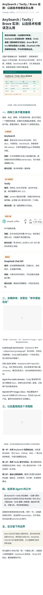
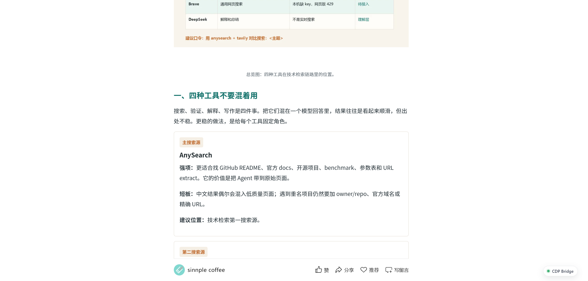
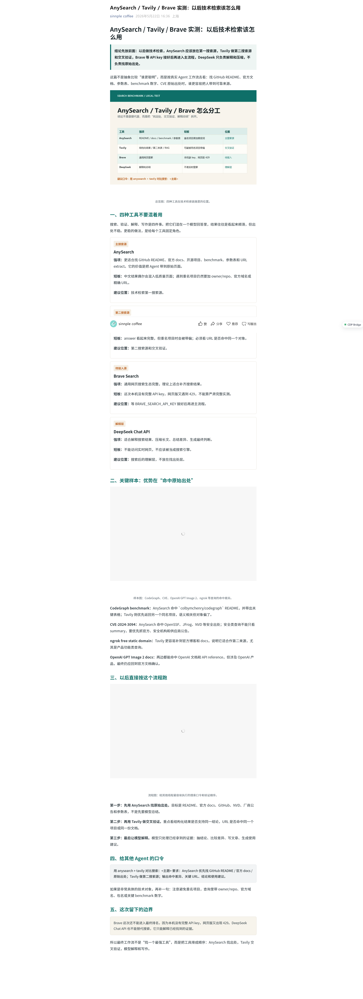
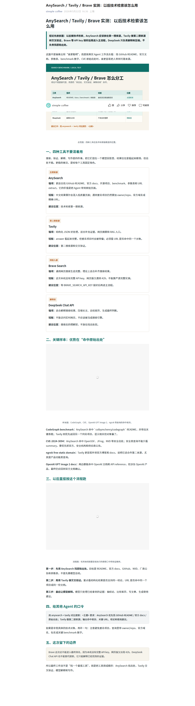

1. Playwright connectOverCDP：主流程
最顺手它能连接固定 Chrome `http://127.0.0.1:9223`，保留公众号后台登录态。适合做发布前后完整链路：打开后台、检查草稿、读取发表记录、进入公开页、截图、DOM 检查、保存证据。

WeChat Automation / Tool Review
这次不讨论“理论上能不能自动化”，只看真实公众号场景：后台登录态、发表记录、公开页验收、截图、DOM 检查、长期脚本化，哪个工具最稳，哪个工具只适合排障。
公众号自动化最重要的不是“能截图”，而是能稳定复用固定 Chrome 登录态。按这个标准看，Playwright connectOverCDP 最顺手：能接 `127.0.0.1:9223`，能做后台操作、发表记录检查、公开页验收、截图和 DOM 检查，也适合写成长期脚本。
日常主流程用 Playwright connectOverCDP。OpenCLI 快速看状态，CDP Bridge 接管当前标签，raw CDP 排障，playwright-cli 不碰登录态主流程。
最适合公众号后台、发表记录、公开页验收、截图、DOM 检查和长期脚本化。它的核心价值是复用固定 Chrome，而不是另开一个临时浏览器。
适合快速打开、看 state、临时确认页面结构。批处理和复杂流程不如 Playwright 清楚。
桥服务在线时，可以读当前真实 Chrome 标签页、执行 JS、截图。适合交互接管，不是长期批量主流程。
底层、直接、可控，但写起来繁琐。适合定位问题，不适合日常发布流水线。
能截公开页，但会新开浏览器。不适合依赖固定登录态的公众号后台操作。
这轮公开页验收里，最好的一篇是《AnySearch / Tavily / Brave 实测：以后技术检索该怎么用》。它赢在公众号形态稳：单列、3 张正文图、无横向表格、分段清楚、公开页图片加载正常。

本地发布版统一认 `C:\html\articles\
所有表格已转手机端卡片，正文图片单列，不使用 `object-fit: cover`。
发表后必须从发表记录打开公开链接，保存桌面和手机截图。
它能连接固定 Chrome `http://127.0.0.1:9223`，保留公众号后台登录态。适合做发布前后完整链路：打开后台、检查草稿、读取发表记录、进入公开页、截图、DOM 检查、保存证据。

OpenCLI 适合快速打开页面、看 URL、标题、DOM state 和临时截图。它的优点是快，缺点是复杂批处理不如 Playwright 脚本清晰。

CDP Bridge MCP 这次补测成功：能读当前真实 Chrome 标签页、执行 JS、截图。它适合接管已经打开的页面，尤其是需要交互探索时。但长期批量流程仍然不如 Playwright connectOverCDP 直观。
raw CDP 最直接，可以自己调 `/json/list`、WebSocket、Runtime.evaluate。但它太底层，容易把简单任务写复杂。适合排查“到底是不是浏览器、标签页、DOM、截图链路的问题”。

playwright-cli 能截公开页，适合探索或生成脚本。但它会启动独立浏览器，不适合依赖固定登录态的公众号后台操作。

只要涉及公众号后台、登录态网页、浏览器发布、发表记录，就必须先验证固定 Chrome。不要新开普通 Chrome 顶替。
& 'F:\codex\tools\verify-codex-fixed-chrome.ps1' -RestartIfMissingExtension检查 `publish/wechat-standard.html`，确认图片单列、无 `object-fit: cover`、表格转卡片。
用 Playwright connectOverCDP 接固定 Chrome，操作公众号后台和草稿。
从发表记录打开公开页，保存手机/桌面截图，记录图片数量和标题。
本轮所有工具截图保存在 `C:\html\published-review\tool-screenshots`。成品文章复制了关键截图到自己的 `assets/`，避免后续迁移时断图。
关键证据包括：Playwright connectOverCDP 主流程截图、OpenCLI DOM 状态、playwright-cli 公开页截图、raw CDP 执行结果、CDP Bridge MCP 补测截图。
可以直接转发这段：
公众号自动化主流程用 Playwright connectOverCDP 接固定 Chrome 9223。
先跑：
& 'F:\codex\tools\verify-codex-fixed-chrome.ps1' -RestartIfMissingExtension
通过后再操作公众号后台、发表记录和公开页验收。
OpenCLI 只做快速 state 检查。
CDP Bridge MCP 用于桥在线时接管当前标签页。
raw CDP 只用于排障。
playwright-cli 会新开浏览器，不用于依赖固定登录态的后台流程。
发布版 HTML 只认：
C:\html\articles\\publish\wechat-standard.html 源报告：`C:\html\published-review\wechat-published-effect-and-tool-comparison.md`。工具截图：`C:\html\published-review\tool-screenshots`。